İsenlik’in sitesi için on hazır tasarım
Google profilinizde site adresinin yerinde Instagram duruyor. Bu tasarımlardan biri, randevuyu WhatsApp’a hazır mesajla getiren siteniz olabilir.
Sizi arayan bulur; site olunca randevuya da dönüşür
- Google’da 4,6 puan, 67 yorumProfiliniz güçlü, ama ziyaretçiyi gönderecek bir site yok.
- Pazar dahil her gün 10.00-20.00Çoğu salonda olmayan bu bilgi, her tasarımın ilk ekranında.
- Hizmet, gün, saat yazılı mesajMüşteri seçer; WhatsApp’ınıza ne istediği yazılı olarak gelir.
On tasarım, hepsi İsenlik’in bilgileriyle
Hepsi çalışıyor: seçimleri deneyin, WhatsApp düğmesine dokunun, telefonda açın. Fotoğraflar geçici; sizinkilerle değişir.
- İsenlik için özel
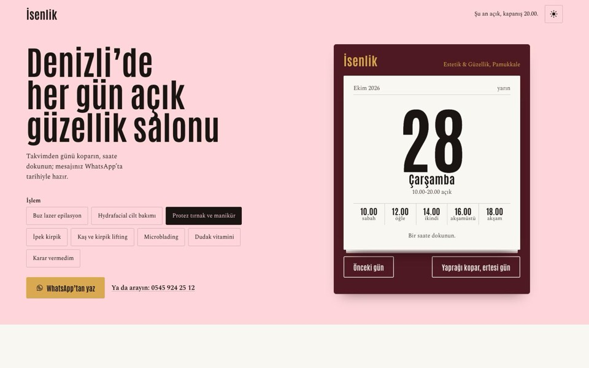
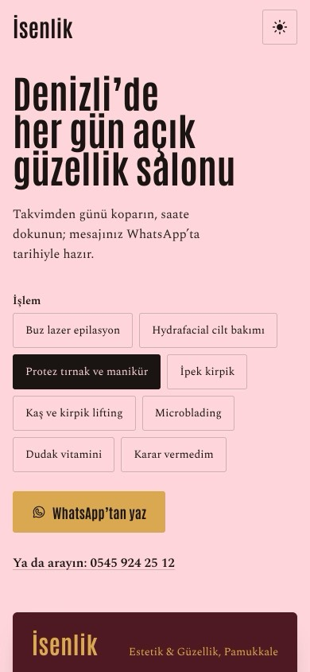
Takvim
Önerdiğimiz tasarım: saatli maarif takvimi. Bugünün yaprağında randevu saatleri; yaprağı koparınca ertesi gün. Pazar kırmızı ve açık.
Takvim’i açın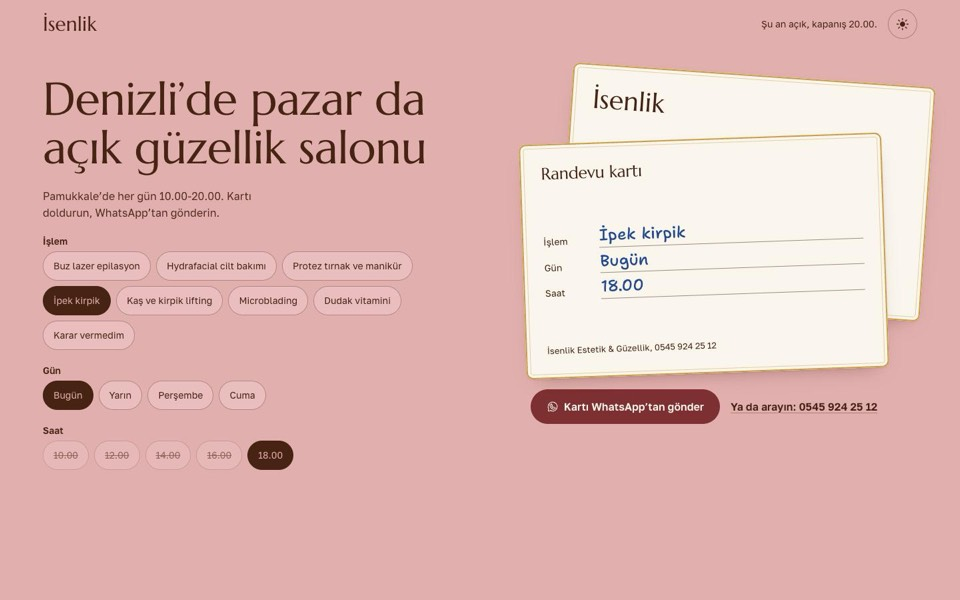
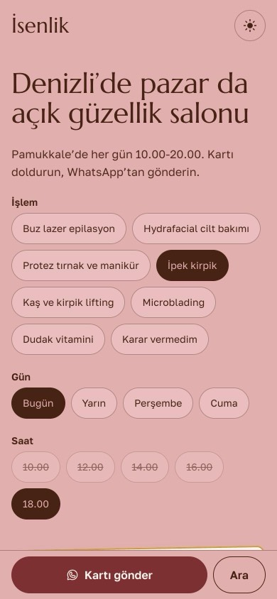
Kart
Salonun randevu kartı. Seçtikçe kartın satırları tükenmez kalem mavisiyle dolar; “pazar da açık” başlıkta.
Kart’ı açın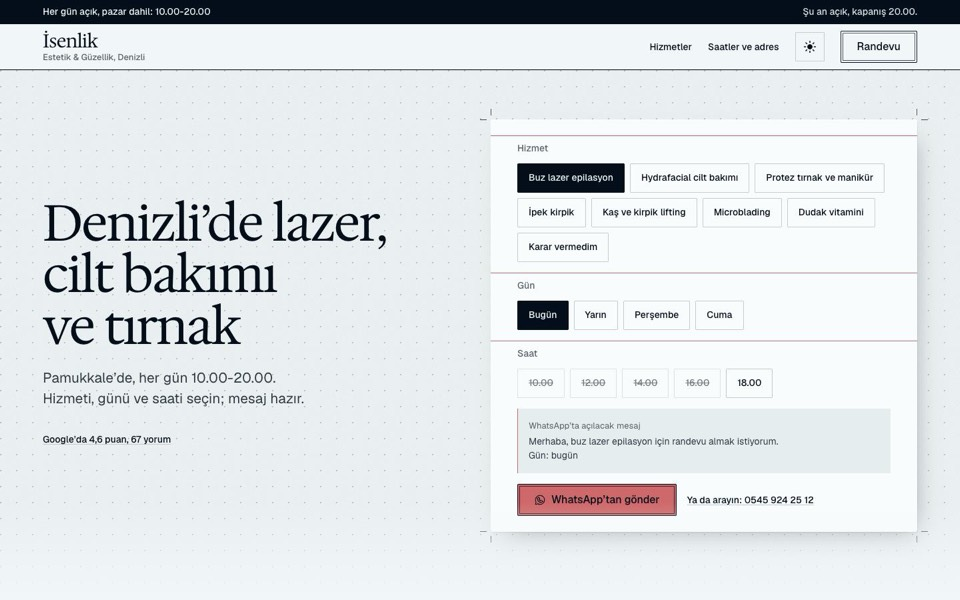
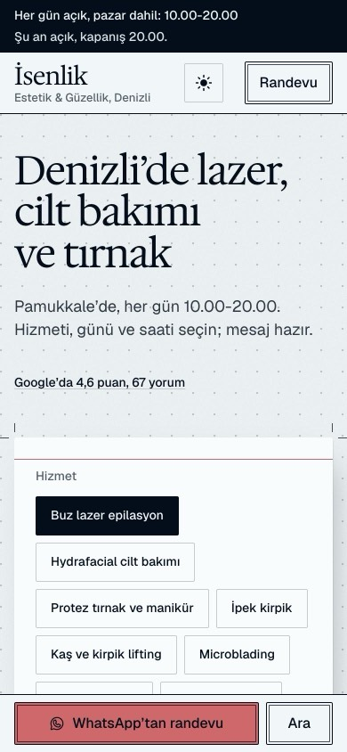
Prova
Tasarım stüdyosu prova kâğıdı; microblading kutusunda kaş haritası çizgileri.
Prova’yı açın- Diğer yönler, İsenlik’e uyarlandı
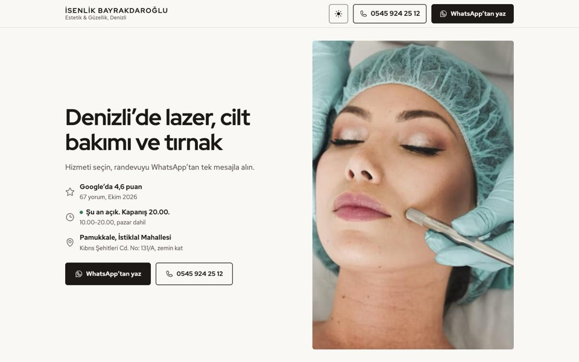
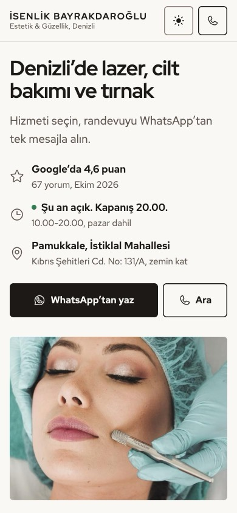
Net
En sade ve en güvenli yol: ihtiyaca göre hizmet seçici, randevu formu, sorular, adres.
Net’i açın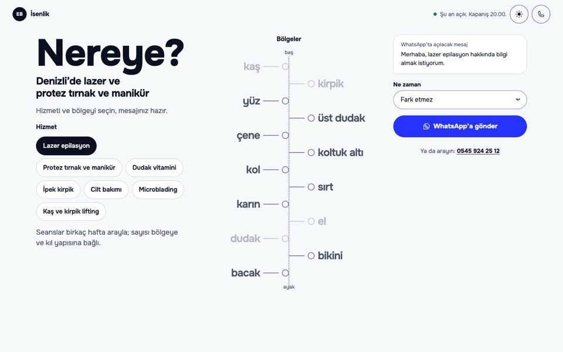
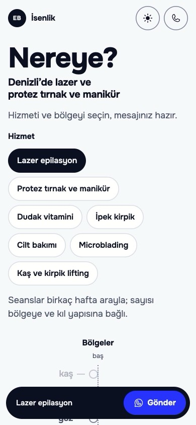
Harita
Site bir araç: hizmeti ve bölgeyi seçin, mesaj kendiliğinden yazılır. Lazer müşterisi için birebir.
Harita’yı açın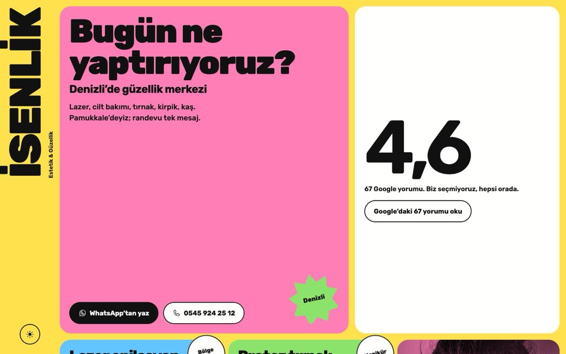
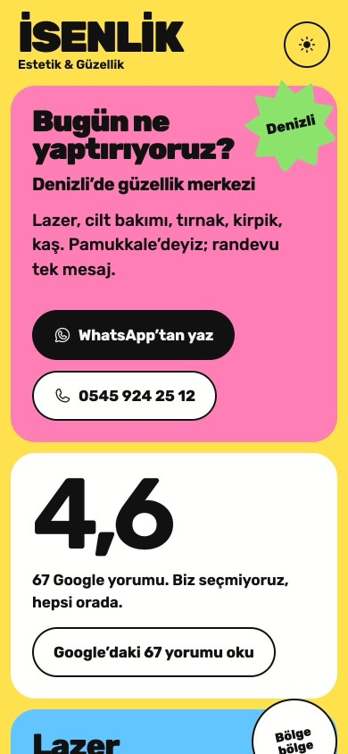
Şeker
Instagram’dan gelen genç kitleye: her hizmet kendi renginde, çıkartmalar, iki renkli fotoğraflar.
Şeker’i açın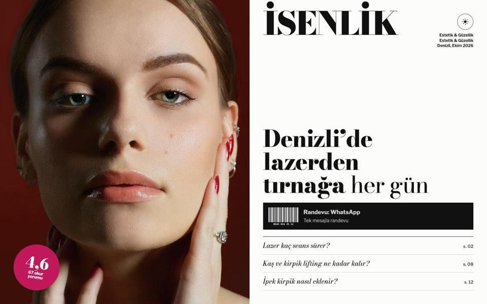
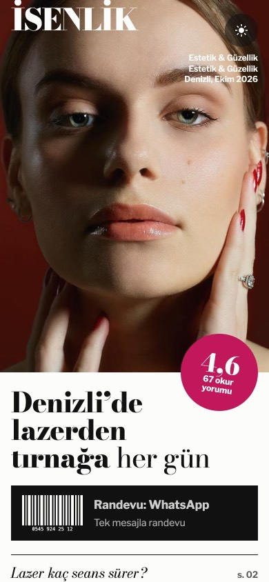
Dergi
Moda dergisi kapağı; her hizmet bir yazı, randevu kapaktaki barkod.
Dergi’yi açın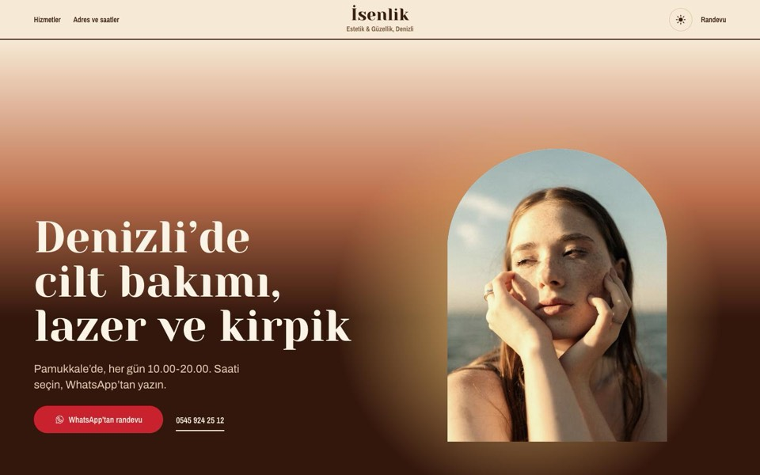
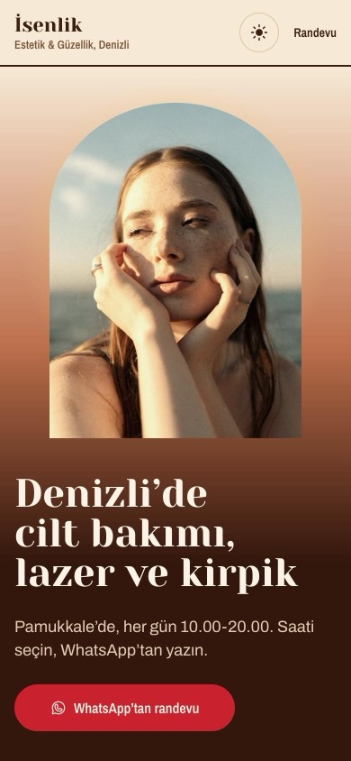
Işık
Akşamüstü ışığı; günün saatleri tek çizgide, koyu temada güneş batar, ay doğar.
Işık’ı açın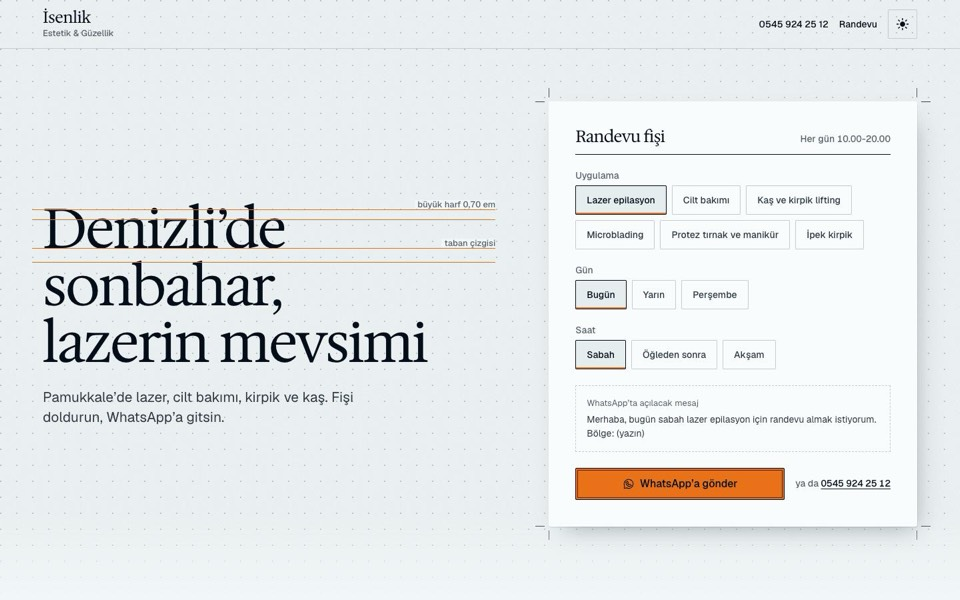
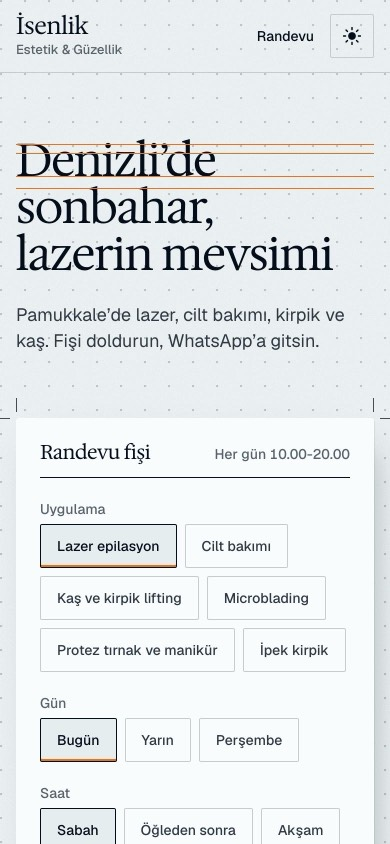
Dergi 2
Prova kâğıdında dergi; yazı tipinin gerçek ölçü çizgileri ve kesim işaretli randevu fişi.
Dergi 2’yi açın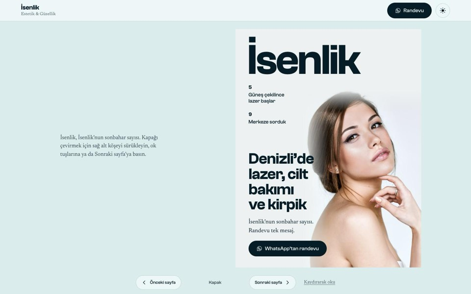
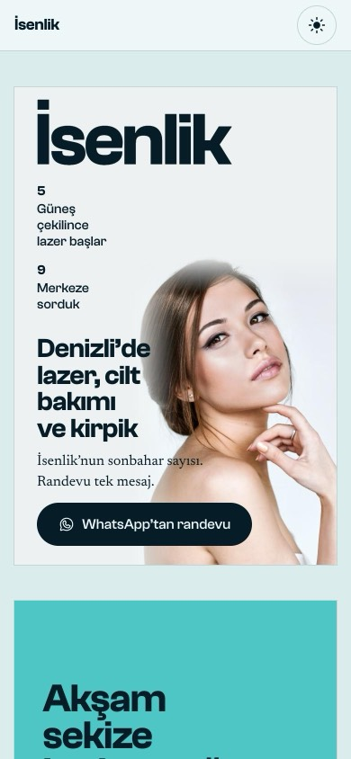
Dergi 3
Sayfaları gerçekten çevrilen bir dergi: kapak, içindekiler, hizmetler, künye.
Dergi 3’ü açın
Her tasarımda olanlar
- WhatsApp’a hizmet, gün ve saatle hazır mesaj
- İki telefon numarası, tek dokunuşla arama
- Adres ve Google Haritalar yol tarifi
- Her gün 10.00-20.00 ve canlı açık / kapalı durumu
- Google puanınıza ve iki Instagram hesabınıza bağlantı
- Google için doğru yapı: başlık, açıklama, işletme şeması
- Telefonda hızlı açılış, açık ve koyu tema
- Çerez ve izleme kodu yok
Nasıl ilerleriz?
- Tasarımı seçersiniz
- Fotoğraf ve bilgileri gönderirsiniz
- Site kendi adresinizde yayına girer
- Google profilinize site adresi eklenirYorumları okuyan müşteri doğrudan sitenize gelir.
Sizden istenecekler
- Salonun ve uygulamaların fotoğrafları
- Uygulamaları yapan uzmanların adları ve belgeleri
- Fiyatlar ve süren kampanyalar (isteğe bağlı)
- Logo dosyası
Beğendiğiniz tasarımın adını yazmanız yeterli
Bu bağlantıyı size gönderen kişiye tasarımın adını (örneğin “Takvim”) yazın; fotoğraflarınızla yayına hazırlayalım.
Tasarımlara dönün